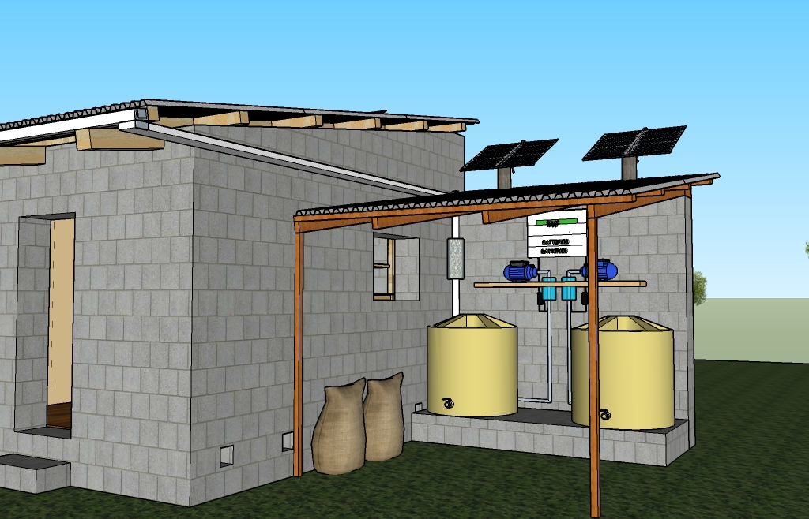

Sanitized reservoirs could be used to store plasma-disinfected water prior to drinking. This can be coupled with a rain water collection system keeping with our theme of self-sufficency.

Medical Equipment Disinfection
Medical equipment can be placed into containers with a plasma source allowing them to be disinfected. Plasma treated water can be bottled and subsquently be used as a antiseptic.
Linen Disinfection
An ambient gas plasma source has the potential to effectively disinfect and de-odorize linens.
Wound Disinfection
Another advantage of plasma disinfection is the possibility of making plasma devices in many different geometries or configurations, such as a "pen" device for disinfecting wounds or finely detailed instruments.
Hand Sanitation
Plasma activated water can be sprayed as a mist to quickly and effectively sanitize hands while minimizing water use.